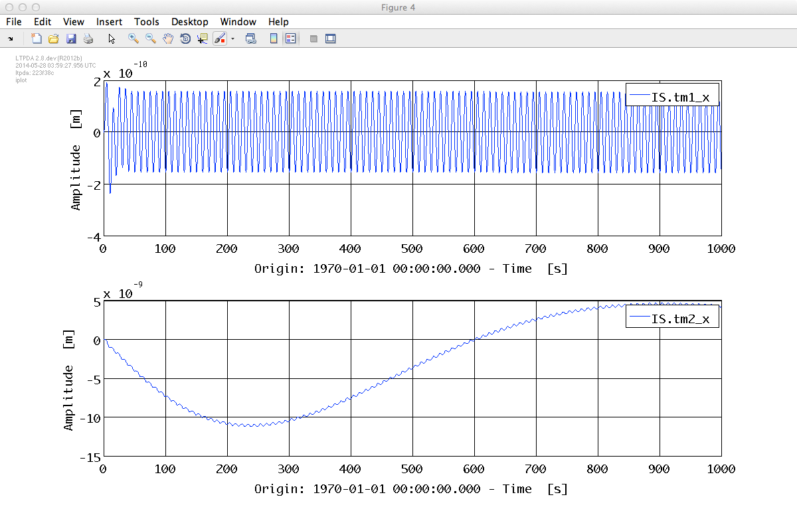
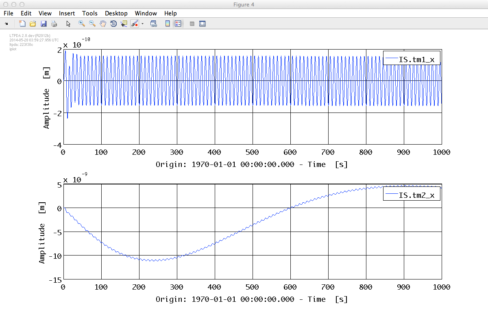

| LTPDA Toolbox™ | contents | |
In Topic 2 you learned how to create an LTP model. Recall, the LTP model is the same as the LPF model but without all the noise-shape filters assembled. As a reminder, you can build this model like this:
ltp = ssm(plist('built-in', 'LTP', 'Version', 'Standard'))
In the previous section we saw how to inject signals in to an ssm model. Here we will inject a signal into the LTP model. In particular, we'll modulate the set-point of the drag-free loop along x by injecting a sine-wave in the guidance input for that control coordinate. We'll ask the simulator for the two main IFO outputs: the position of SC relative to TM1 and the position of TM2 relative to TM1.
% Create some time-series analysis object to inject
aSignal = ao(plist('tsfcn', '1e-6*sin(2*pi*0.01*t)', 'fs', 10, 'nsecs', 1000));
% Create the plist to configure simulate
sim_pl = plist('AOS', aSignal, 'AOS Variable Names', 'GUIDANCE.ifo_x1', ...
'return outputs', {'DELAY_IFO.x1', 'DELAY_IFO.x12'})
% Run the simulation
out = simulate(ltp, sim_pl);
% Create a plist to configure iplot to plot with subplots
plot_pl = plist('arrangement', 'subplots');
% Use matrix/iplot to plot the internal objects
iplot(out, plot_pl)
% First extract the internal AOs and then plot
[o1, o12] = unpack(out);
iplot(o1, o12, plot_pl);

This time we'll apply a modulated force on TM1. We'll ask the simulator for the all IFO outputs and all IS output. These force inputs are called 'TESTSIGNAL' in the current models. We'll create a sine-wave signal of 0.1nN at 10 mHz and apply it to TM1 along x:
% Create some time-series analysis object to inject
aSignal = ao(plist('tsfcn', '1e-10*sin(2*pi*0.1*t)', 'yunits', 'N', 'fs', 10, 'nsecs', 1000));
% Generate a list of outputs we want from the simulator
outputs = ltp.getPortNamesForBlocks(plist('blocks', {'DELAY_IFO', 'IS'}, 'type', 'outputs'));
% Create the plist to configure simulate
sim_pl = plist('AOS', aSignal, 'AOS Variable Names', 'TESTSIGNAL.tm1_x', 'return outputs', outputs)
% Run the simulation
out = simulate(ltp, sim_pl);
| Note: although the input (and output) ports of the ssm models have assigned units, and your injected signals may have units, these are not currently checked to be consistent. This will likely change in a future release. |
% Create a plist to configure iplot to plot with subplots
plot_pl = plist('arrangement', 'subplots');
% First extract the internal AOs we want and then plot
o1 = out.getObjectAtIndex(1);
o12 = out.getObjectAtIndex(4);
IS_tm1_x = out.getObjectAtIndex(7);
IS_tm2_x = out.getObjectAtIndex(13);
% Then plot the IFO and IS signals together
iplot(o1, o12, plot_pl);
iplot(IS_tm1_x, IS_tm2_x, plot_pl);
 

| |
How to inject signals | Inject noise signals to LTP | |
©LTP Team